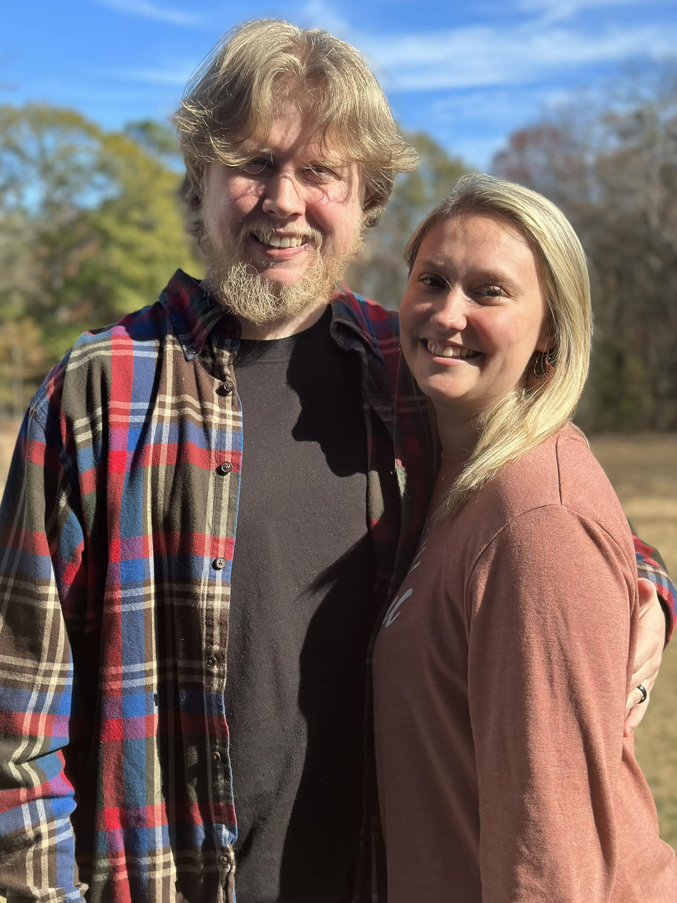

Technology Analyst at FIS Global
I work at the intersection of business and technology, helping financial systems run reliably, making sense of data, and translating complex requirements into solutions that actually work. Based in Benton, AR.

Background
I'm a Technology Analyst at FIS Global, based in Benton, Arkansas, where I live with my wife and our three dogs. I have always been drawn to figuring out how things work, whether that is a financial system, a data pipeline, or the mechanics of a tennis serve. That curiosity is what pulled me into technology.
My day-to-day involves a lot of what I genuinely enjoy: digging into requirements, working alongside engineers and stakeholders, chasing down the root cause of a tricky production issue, and making sure enterprise systems do exactly what they are supposed to do. Having both a technical background and a business degree means I can hold my own in both conversations, and I find that combination pretty useful.
Outside of work I stay active on the tennis court, unwind with some video games, and spend weekends exploring trails around Arkansas with the dogs. Always happy to swap hiking recommendations if you have good ones.
Analysis and Process
Technical Tools
Education
Southern Arkansas University
Henderson State University
National Park College
Career
FIS Global · Little Rock, AR
National Park College · Hot Springs, AR
Arvest Bank · Hot Springs, AR
Portfolio
01 / Machine Learning
A machine learning model that predicts cardiovascular risk from patient health data, combining data analysis, model evaluation, and real clinical insight.
02 / Systems
A full two-pass assembler for the Hack assembly language that translates symbolic code into binary machine instructions, built in C++.
03 / Mobile
A cross-platform mobile app for tracking time across activities, built with Flutter and Dart with a clean, user-first interface.
Get in touch
I'm always open to connecting with other folks in the technology and data space. Whether you want to talk shop, explore a collaboration, or just say hello, feel free to reach out. I try to reply promptly.